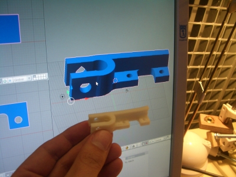
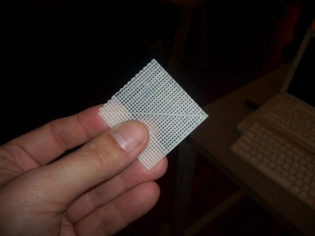
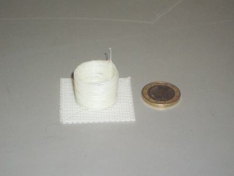
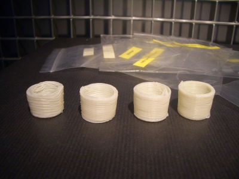
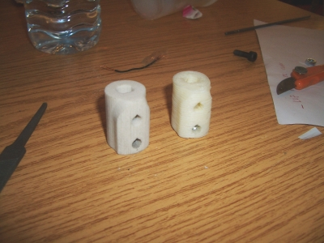
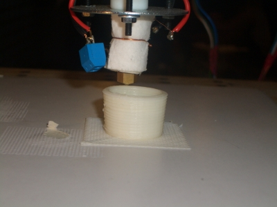
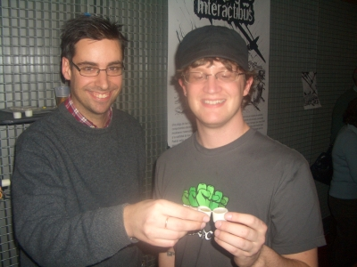

¡La máquina ha impreso sus primeras piezas! Es increible verla funcionado y cómo, capa a capa, va construyendo los objetos. Lo mejor es verlo en un vídeo:


El jueves por la mañana se solucionaron los problemas con el software y se pudo empezar a imprimir. La primera pieza fue una rejilla, que se usa como base para construir el resto de piezas


Siguiendo la tradición establecida, la primera pieza sólida que se imprima tiene que ser un vaso de chupito ;-). Así lo hicimos:


Esta primera pieza salió muy tosca. Zach nos dijo que ahora había que ajustar los parámetros del software. En esta foto se puede ir viendo la evolución de los vasos de chupito:


La cuarta generación sale mucho mejor que la primera. Sin embargo, la impresora todavía no está afinada. En la foto se pueden apreciar las diferentes “capas” en vez de obtenerse una superficie lisa. En el motor del eje z hubo un problema con la pieza de agarre. Hace varios días que se partió y se tuvo que sustituir por una chapuza casera, que al menos ha permitido que la impresora funcione.
Sin embargo, ahora viene lo bueno. La impresora la vamos a usar para imprimir sus propias piezas de manera que va a poder auto-repararse 😉 Zach asegura que cuando se cambie esa pieza las impresiones serán mucho mejores.
Antes de cambiarla, hemos impreso otras piezas de la propia impresora. Esta foto es muy interesante. En la izquierda se puede ver una pieza realizada con una impresora 3D comercial. El material es una mezcla de escayola y resina. En la derecha se puede ver la misma pieza impresa en reprap. El material es plástico:


La pieza que os he puesto en la primera foto del blog también es de la propia impresora.
Aquí podéis ver con más detalle la impresión del vaso de chupito:


Y en esta otra estamos Zach y yo brindando con cerveza y usando nuestros propios vasos impresos con reprap:


Hoy viernes no voy a poder ir al medialab 🙁, pero espero que se pueda solucionar el problema del eje z y así mejorar la calidad de las piezas. Mis piezas del módulo Y1 está esperando para ser impresas…
Ahora que la veo funcionar entiendo más de qué va la movida… Tenía una idea más fantástica de la impresora, algo así como que pulía un gran bloque de plástico y hacía las piezas jajaja. Es lo que tiene no tener ni puñetera idea de robots y maquinas😛 Pero ahora veo que realmente está imprimiendo!! Se sale!!
Sí, es más simple que todo eso 😉 Es como una “churrera” pero en vez de masa de churros va depositando el plástico fundido. Cuando ha terminado con la primera capa, el suelo de la máquina baja 0.5mm y se comienza la impresiónn de la siguiente capa.
Se sale!!!!!!!
No puedo aguantar, yo quiero una ya!!!!!
¡Hola delincuentes! tengo muchas dudas sobre esto del REPRAP, quisiera saber qué material utilizan para hacer las impresiones 3D, si es alguna resina líquida con catalizador, plástico caliente tipo pegamento de silicón, plástico derretido. Muy buen proyecto este, me hace pensar en la anarquía total y sustentable.
Un abrazo desde Venezuela
Hola Juan Pablo,
El material que usa la Reprap es ABS, el mismo plástico que el de las piezas del Lego. Lo venden en filamentes de 3mm de diametro, que vienen en bobinas. Este filamente entra en el cabezal donde se calienta y el plástico derretido se vierte a traves de una aguja de 0.5mm de diametro.